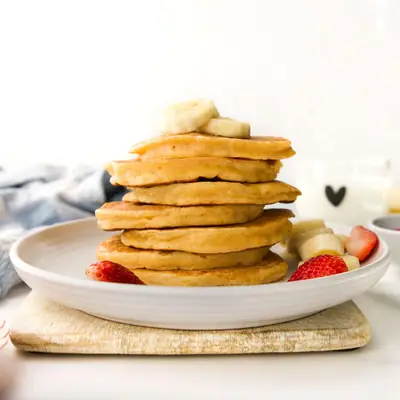

Banana Greek Yogurt Pancakes

Ingredients
- 1 cup (125g) all-purpose flour (plain flour)
- 1½ tsp baking powder
- ¼ tsp baking soda
- ½ tsp cinnamon (,optional)
- 1 cup (240 g) plain Greek yogurt
- 1 medium ripe banana
- 2 large eggs
- 1 tsp vanilla extract
- Unsalted butter or oil (,for cooking)
Steps
- In a large mixing bowl, whisk together the flour, baking powder, baking soda and cinnamon.
- Mash the banana with a fork, leaving a few small lumps rather than mashing until completely smooth. I find over-mashing or puréeing the banana can make the pancakes denser rather than light and fluffy.
- In a seperate bowl or jug, add the mashed banana, yogurt, eggs and vanilla and mix until combined.
- Pour the wet ingredients into the dry ingredients and gently stir until just combined. Don't overmix; a few lumps are fine.
- Heat a non-stick frying pan or skillet over medium heat. Lightly grease with a small amount of butter or oil, wiping away the excess with a paper towel.
- Use an ice-cream scoop (about ¼ cup) to add the batter to the pan and form a circle. The size of pan will determine how many you can fit in. You can make smaller tablespoon pancakes if you prefer.
- Transfer cooked pancakes to cooling rack or plate. Repeat with the remaining batter, lightly greasing the pan and wiping again as needed.
Recipe by Healthy Little Foodies, from Healthy Little Foodies. Saved here for personal use; the original has the full notes, tips and photos. Open original